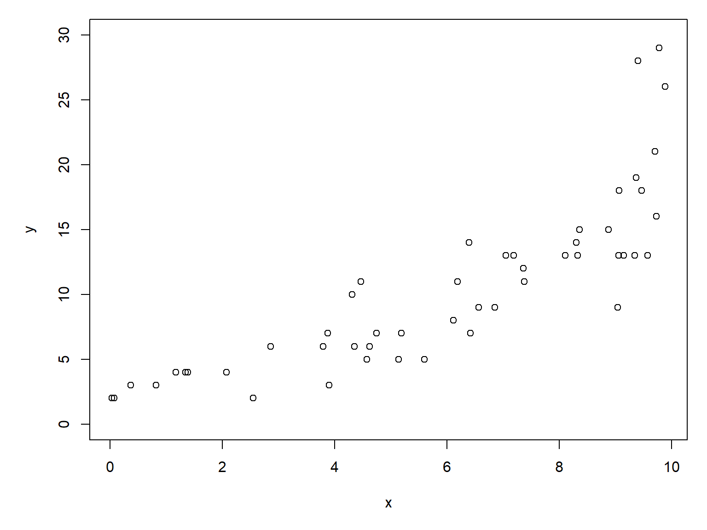
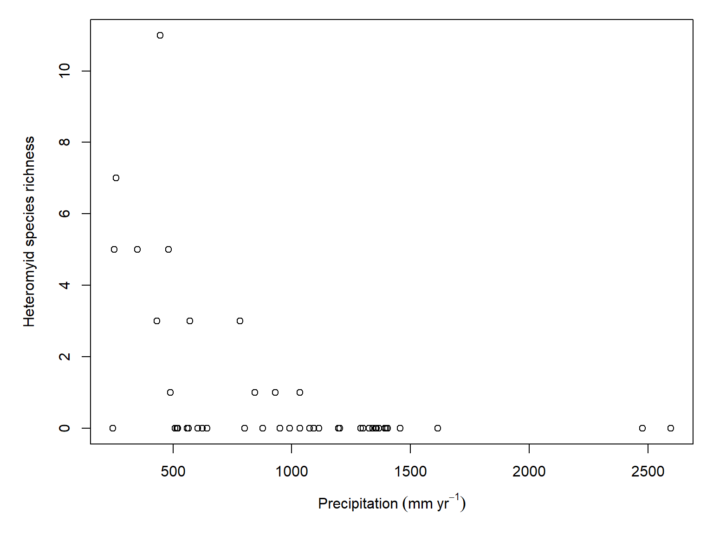
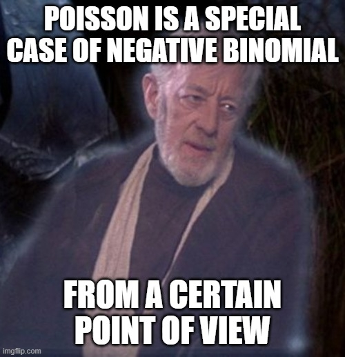
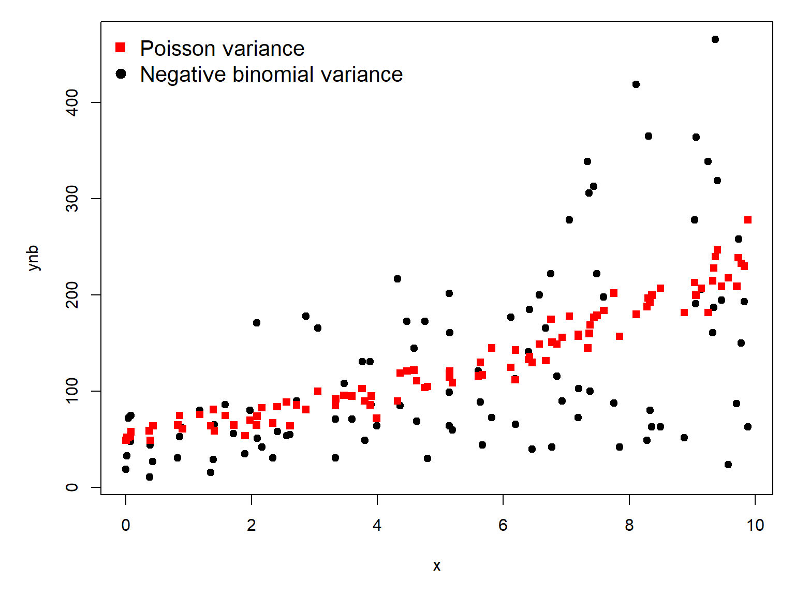
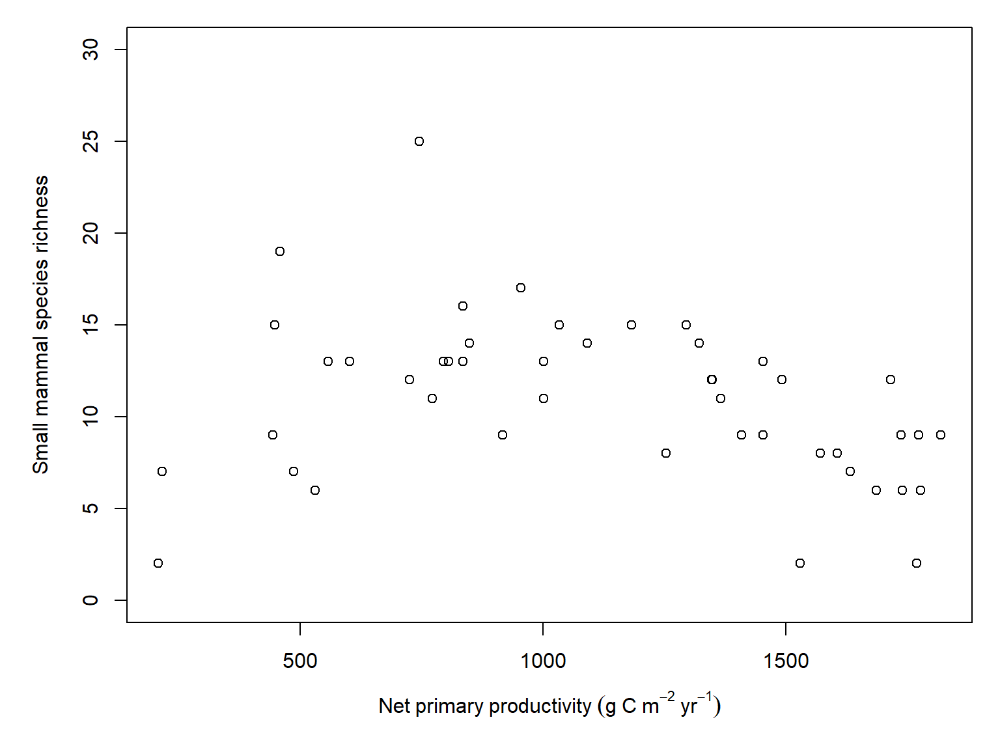

This module explores GLMs for count data. Count data are exactly what they sound like: values resulting from counting things. Count data take the form of non-negative integers. Non-negative integers, however, are not necessarily count data. For example, summer temperatures in Georgia can be rounded to the nearest integer, but they will not be counts.
20.1 Poisson GLM for counts
Count data are usually well-modeled by a kind of GLM called Poisson regression. The “Poisson” part comes from the Poisson distribution, which describes counts and events that occur at a constant rate. The “regression” part of the name comes from the fact that the technique involves a linear relationship between the predictors and some function of the response.
20.1.1 Definition
The Poisson GLM uses a log link function and Poisson response distribution to model counts \(y\) as:
\[y\sim Poisson\left(\lambda\right)\]
\[\log\left(\lambda\right)=\eta\]
\[\eta=\boldsymbol{\beta}\mathbf{x}\]
Notice that the Poisson distribution has only one parameter, \(\lambda\) (“lambda”), which is both the mean and variance of the distribution. This means that we should not be surprised or concerned if a scatterplot suggests heteroscedasticity with variance increasing with the expected value.
20.1.2 Example with simulated data
Let’s simulate a dataset and analyze it.
# random number seed for reproducibilityset.seed(42)# sample sizen <-50# coefficientsbeta0 <-0.9beta1 <-0.2# x valuesx <-runif(n, 0, 10)# linear predictoreta <- beta0 + beta1 * x# inverse link functionlambda <-exp(eta)# response variabley <-rpois(n, lambda)# make the plotpar(mar=c(5.1, 5.1, 1.1, 1.1))dat <-data.frame(x=x, y=y)plot(x,y, ylim=c(0, 30))

The relationship between \(y\) and \(x\) looks linear, but because we are clever biologists, we know that linear models are not appropriate for two reasons. First, linear models predict continuous responses, and counts are not continuous (they are discrete). Second, linear models can predict negative responses, and counts cannot be negative. So, we will try Poisson regression because the Poisson distribution is so good at handling counts.
Call:
glm(formula = y ~ x, family = poisson, data = dat)
Coefficients:
Estimate Std. Error z value Pr(>|z|)
(Intercept) 0.9258 0.1447 6.397 1.59e-10 ***
x 0.2089 0.0183 11.415 < 2e-16 ***
---
Signif. codes: 0 '***' 0.001 '**' 0.01 '*' 0.05 '.' 0.1 ' ' 1
(Dispersion parameter for poisson family taken to be 1)
Null deviance: 194.34 on 49 degrees of freedom
Residual deviance: 37.16 on 48 degrees of freedom
AIC: 241.37
Number of Fisher Scoring iterations: 4
The estimated parameters are very close to the correct values! The model also explains a lot of the variation in \(y\), as seen by the pseudo-\(R^2\) of \(>0.8\).
1-mod1$deviance/mod1$null.deviance
[1] 0.8087827
The next step is to plot predicted values and the original data. If you have visited any of the other modules in this course, you should be familiar with the process by now.
Consider this plot of heteromyid species richness vs. precipitation:
par(mar=c(5.1, 5.1, 1.1, 1.1))plot(dx$precip, dx$het,xlab=expression(Precipitation~(mm~yr^{-1})),ylab="Heteromyid species richness")

It looks like heteromyid species richness declines with increasing precipitation. Before we go on, though, we should exclude the two sites in Puerto Rico because there is no sensible biogeographic reason for any heteromyids to be there. These sites are Guánica Forest (GUAN) and Lajas Experimental Station (LAJA), both in southwestern Puerto Rico. We will drop those sites from this analysis because Puerto Rico has a distinct biogeographic history, and its absence of native heteromyid rodents reflects geographic isolation rather than the same ecological processes influencing species richness across continental North America. Note that we are not dropping these sites merely because they have zero richness, nor because they are oddballs on the scatterplot. There is an a priori biological reason to exclude them because they differ in some fundamental way from the other observations. We would exclude a site in Europe or a zoo for the same reason.
Call:
glm(formula = het ~ precip, family = poisson, data = dz)
Coefficients:
Estimate Std. Error z value Pr(>|z|)
(Intercept) 1.644682 0.854265 1.925 0.0542 .
precip -0.003843 0.001620 -2.373 0.0176 *
---
Signif. codes: 0 '***' 0.001 '**' 0.01 '*' 0.05 '.' 0.1 ' ' 1
(Dispersion parameter for poisson family taken to be 1)
Null deviance: 27.864 on 15 degrees of freedom
Residual deviance: 17.727 on 14 degrees of freedom
AIC: 27.207
Number of Fisher Scoring iterations: 6
And check the deviance explained:
1-mod2$deviance/mod2$null.deviance
[1] 0.3638219
Not bad. We still need to check the predicted values though.
20.2 Negative binomial GLM for overdispersed counts
Some count data are overdispersed, meaning that they contain more variance than expected under a Poisson distribution. That is, \(\sigma^2>\lambda\). There is no hard and fast rule for when overdispersion is a problem, but we don’t need one. Rather than try to define a threshold where you should switch from a Poisson GLM to a negative binomial GLM, just fit both and see which model fits better. After all, the Poisson GLM is just a special case of the negative binomial GLM, making the two models nested.
If the negative binomial can be defined as a Poisson-gamma mixture distribution, then the Poisson distribution can be thought of as a negative binomial with no overdispersion.

20.2.1 Definition
The negative binomial GLM is defined as:
\[y\sim NegBin\left(\lambda,\theta\right)\]
\[\log\left(\lambda\right)=\eta\]
\[\eta=\boldsymbol{\beta}\mathbf{x}\]
were \(\lambda\) is the expected value (mean) and \(\theta\) is the overdispersion parameter:
\[\sigma^2=\lambda+\frac{\lambda^2}{\theta}\]
In the R functions that deal with the negative binomial, \(\theta\) is referred to as the size parameter. As \(\theta\) gets smaller, the fraction \(\frac{\lambda^2}{\theta}\) gets larger, and the distribution picks up more and more variance compared to the Poisson distribution (because for a Poisson, \(\sigma^2=\lambda\)). Thus, as \(\theta\) increases to positive infinity, the fraction gets smaller and the variance approaches that of a Poisson.
As always, let’s simulate some data so we can see how the model really works.
# random number seed for reproducibilityset.seed(42)# sample sizen <-100# coefficientsbeta0 <-4# interceptbeta1 <-0.15# slopetheta <-3# overdispersion# x valuesx <-runif(n, 0, 10)# linear predictoreta <- beta0 + beta1 * x# inverse link functionlambda <-exp(eta)# response variable## negbinynb <-rnbinom(n, mu=lambda, size=theta)## poisson for comparisonyp <-rpois(n, lambda)# assemble into data framedn <-data.frame(x=x, ynb=ynb, yp=yp)# make the plotpar(mar=c(5.1, 5.1, 1.1, 1.1))plot(x,ynb, pch=19)points(x, yp, pch=15, col="red")legend("topleft", legend=c("Poisson variance","Negative binomial variance"),pch=c(15, 19), col=c("red", "black"),bty="n", cex=1.3)

There is no base R function for a negative binomial GLM, so we need to find an add-on package for it. The most common package for this is probably MASS.
library(MASS)
Now let’s fit the negative binomial and the Poisson GLMs.
Both models give similar estimates for the intercept and slope.
summary(mod3)
Call:
glm(formula = ynb ~ x, family = poisson, data = dn)
Coefficients:
Estimate Std. Error z value Pr(>|z|)
(Intercept) 3.939453 0.023017 171.15 <2e-16 ***
x 0.151421 0.003256 46.51 <2e-16 ***
---
Signif. codes: 0 '***' 0.001 '**' 0.01 '*' 0.05 '.' 0.1 ' ' 1
(Dispersion parameter for poisson family taken to be 1)
Null deviance: 6757.6 on 99 degrees of freedom
Residual deviance: 4413.0 on 98 degrees of freedom
AIC: 5055
Number of Fisher Scoring iterations: 5
summary(mod4)
Call:
glm.nb(formula = ynb ~ x, data = dn, init.theta = 2.918119928,
link = log)
Coefficients:
Estimate Std. Error z value Pr(>|z|)
(Intercept) 3.87407 0.12037 32.184 < 2e-16 ***
x 0.16249 0.01981 8.202 2.36e-16 ***
---
Signif. codes: 0 '***' 0.001 '**' 0.01 '*' 0.05 '.' 0.1 ' ' 1
(Dispersion parameter for Negative Binomial(2.9181) family taken to be 1)
Null deviance: 165.74 on 99 degrees of freedom
Residual deviance: 105.15 on 98 degrees of freedom
AIC: 1105.6
Number of Fisher Scoring iterations: 1
Theta: 2.918
Std. Err.: 0.404
2 x log-likelihood: -1099.579
The main difference is that the negative binomial model has an extra term, \(\theta\), to account for potential overdispersion. The estimate, \(\hat{\theta}=2.918\pm0.404\), is pretty close to the truth. Does adding that term improve the model fit? Let’s do a likelihood ratio test.
Normally, we can use the anova(...,test="Chisq") method we saw in Section 18.3.6. However, because Poisson and negative binomial models have the same number of terms in the model (intercept and slope), anova() finds a difference of zero residual degrees of freedom. The overdispersion parameter \(\theta\) in the negative binomial model isn’t counted in the residual degrees of freedom used by anova().
Instead, we have to use another method. The function lrtest() in package lmtest uses the number of estimated parameters in the likelihood, which includes the overdispersion parameter. However, there is a problem.
# close, but not quite correct# because of the boundary problemlmtest::lrtest(mod3, mod4)
Likelihood ratio test
Model 1: ynb ~ x
Model 2: ynb ~ x
#Df LogLik Df Chisq Pr(>Chisq)
1 2 -2525.52
2 3 -549.79 1 3951.5 < 2.2e-16 ***
---
Signif. codes: 0 '***' 0.001 '**' 0.01 '*' 0.05 '.' 0.1 ' ' 1
Recall that as \(\theta\) gets larger, the variance in the negative binomial approaches the variance of the Poisson. We saw this earlier:
If we reparameterize the negative binomial variance with \(\alpha=1/\theta\), we get
\[\sigma^2=\lambda+\lambda^2\alpha\]
then the comparison between the Poisson and the negative binomial GLM boils down to testing the null hypothesis that
\[H_0:\alpha=0\]
But because \(\alpha\geq0\), the null hypothesis lies on the boundary of the parameter space for the negative binomial model. This violates one of the assumptions of the likelihood ratio test. So, both anova(...,test="Chisq") and lmtest::lrtest() are inappropriate. Instead, we need to calculate the LR test statistic directly:
LR <-2*(as.numeric(logLik(mod4))-as.numeric(logLik(mod3)))pval <-0.5*pchisq(LR, df=1, lower.tail=FALSE)c(LR=LR, pval=pval)
LR pval
3951.456 0.000
We would report this as (likelihood ratio = 3951.5, 1 d.f., p < 0.001).
Or, if we don’t want to calculate a LR test manually, we could just compare the models using AIC:
aic.df <-AIC(mod3, mod4)# delta aicaic.df$delta <- aic.df$AIC-min(aic.df$AIC)# relative likelihoodsaic.df$w <-exp(aic.df$delta/2)# delta AIC is so large, can't calculate# AIC weight... basic number sense should# tell us that w>0.99999 for mod4 (negbin)aic.df
The case for the negative binomial mod4 over the Poisson mod3is pretty convincing at this point, but let’s plot the models and their predictions to be sure.
At first glance, the Poisson model appears to have a better fit because the 95% confidence interval is so narrow. But, this is a mistake because the fitted negative binomial model revealed considerable overdispersion. The Poisson model does not account for this overdispersion, and consequently assumes that the observations contain more information about the expected value than they actually do. As a result, its standard errors are underestimated and the CI appears misleadingly narrow. The negative binomial model does account for the overdispersion, which means that it incorporates that extra uncertainty into its SE and CI calculations.
Consider this plot of species richness vs. net primary productivity.
par(mar=c(5.1, 5.1, 1.1, 1.1))plot(dx$npp, dx$tot,xlab=expression(Net~primary~productivity~(g~C~m^{-2}~yr^{-1})),ylab="Small mammal species richness",ylim=c(0, 30))

It looks like small mammal species richness declines with increasing net primary productivity, which is actually kind of surprising. Let’s investigate with a negative binomial GLM. We will also fit a Poisson GLM for comparison, to check whether the negative binomial is handling variance appropriately.
Call:
glm(formula = tot ~ npp, family = poisson, data = dx)
Coefficients:
Estimate Std. Error z value Pr(>|z|)
(Intercept) 2.6650178 0.1104849 24.121 < 2e-16 ***
npp -0.0002533 0.0000948 -2.671 0.00755 **
---
Signif. codes: 0 '***' 0.001 '**' 0.01 '*' 0.05 '.' 0.1 ' ' 1
(Dispersion parameter for poisson family taken to be 1)
Null deviance: 87.775 on 45 degrees of freedom
Residual deviance: 80.661 on 44 degrees of freedom
AIC: 274.94
Number of Fisher Scoring iterations: 4
And the negative binomial:
mod6 <-glm.nb(tot~npp, data=dx)summary(mod6)
Call:
glm.nb(formula = tot ~ npp, data = dx, init.theta = 15.54633293,
link = log)
Coefficients:
Estimate Std. Error z value Pr(>|z|)
(Intercept) 2.6902618 0.1469308 18.310 <2e-16 ***
npp -0.0002763 0.0001241 -2.226 0.026 *
---
Signif. codes: 0 '***' 0.001 '**' 0.01 '*' 0.05 '.' 0.1 ' ' 1
(Dispersion parameter for Negative Binomial(15.5463) family taken to be 1)
Null deviance: 54.118 on 45 degrees of freedom
Residual deviance: 49.567 on 44 degrees of freedom
AIC: 269.82
Number of Fisher Scoring iterations: 1
Theta: 15.55
Std. Err.: 8.27
2 x log-likelihood: -263.819
AIC suggests that the negative binomial model is better supported than the Poisson model.
That’s an interesting finding: both the negative binomial model and the null model are better supported than the Poisson model. So, if we had only used the Poisson model, we would have found a “statistically significant” effect of NPP, but that model would have had less overall support than the null model because the explanatory power of NPP was not worth the cost of the extra parameter. This shows us the importance of properly accounting for variance in a GLM. This also neatly illustrates the difference between purely frequentist inference using p-values, and information theoretic inference using AIC (see Chapter 29 for a more in-depth discussion).
Finally, let’s make a figure to show off this relationship we found:
Quasi-Poisson regression is another approach to overdispersed count data. Unlike negative binomial regression, it does not specify a complete probability distribution, instead allowing the variance to be a constant multiple of the mean. This adjusts standard errors to account for overdispersion but does not provide a conventional likelihood for AIC-based model comparison. For this reason, we focus on negative binomial regression as a likelihood-based alternative to Poisson regression.